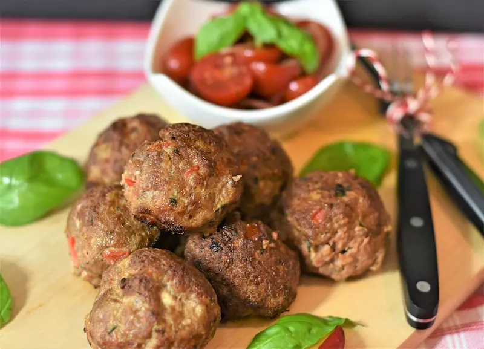

Keftedes

A family favorite straight from the village of Kyparissia. Serve as an appetizer or with tzatziki, Greek salata, and pita or pasta for a full meal. They taste best served at room temp and make for wonderful leftovers. If you don't care for lamb, try using all beef instead.
Ingredients
- 4 slices white bread, torn into pieces
- 2 tablespoons milk
- 1 clove garlic
- 1 onion, quartered
- 4 teaspoons dried mint
- 1 teaspoon salt
- ground black pepper to taste
- ½ pound ground beef
- ½ pound ground lamb
- 4 eggs
- ½ cup all-purpose flour for dredging
- Olive oil for frying
Steps
- Moisten the bread pieces with the milk in a large bowl, and set aside
- Mince the garlic in a food processor, then add the onion, mint, salt, and pepper. Process until the onion is finely chopped.
- Add the onion mixture to the bowl with the moist bread, along with the beef, lamb, and eggs. Mix with your hands until thoroughly blended.
- Roll the mixture into balls measuring 1 1/2 to 2 inches in diameter.
- Place the flour in a shallow pan, and roll the balls in the flour to coat. Shake off any excess flour, and place the meatballs onto a plate or baking sheet, pressing to flatten slightly. This will keep them from rolling away.
- Heat 1 inch of oil in a large skillet over medium heat. Add the meatballs, 8 or 10 at a time, and cook until nicely browned on the outside, and no longer pink in the center, about 10 minutes.
- Drain meatballs on a paper towel-lined plate. Repeat with remaining meatballs.